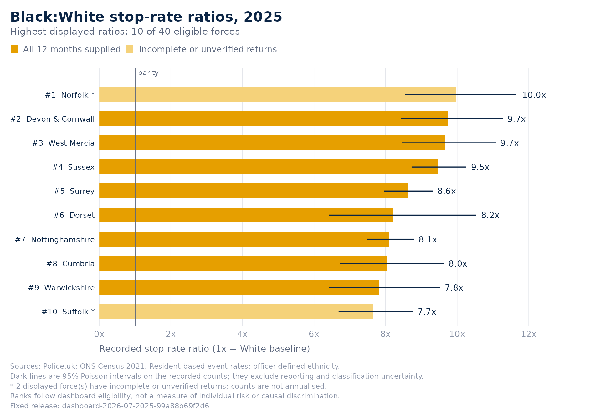
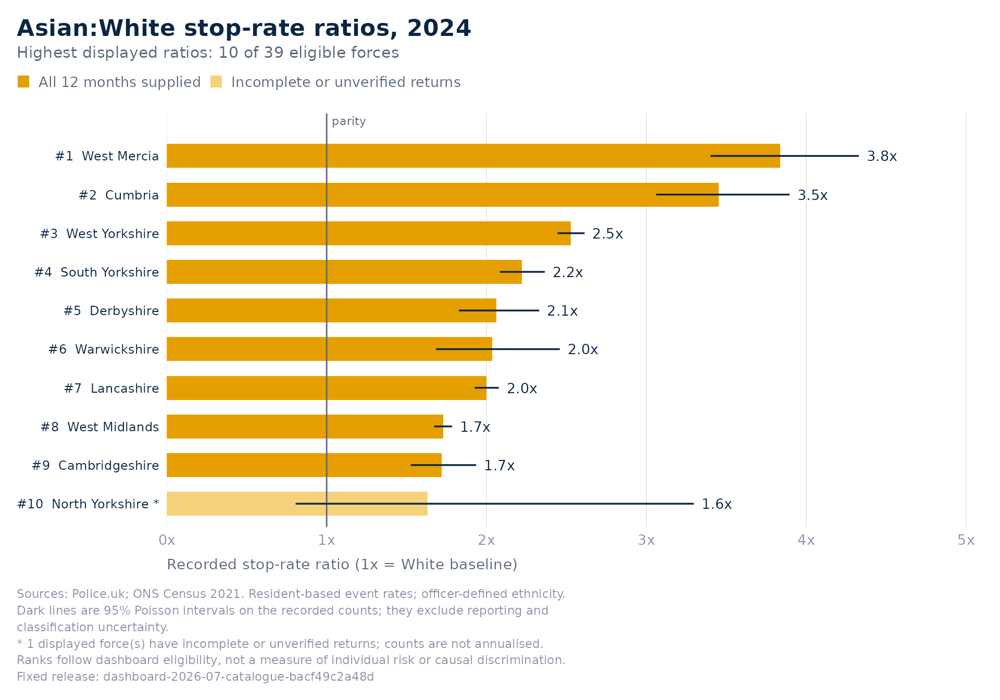

Reproduce and validate a dashboard chart
Mustapha Mohammed, Sarah Hamed, Souci Frissa, Aisha Mohamed and Nathan Stanley, Black Thrive Global
23 October 2026
Source:vignettes/getting-started.Rmd
getting-started.RmdBlackThriveSS makes a fixed set of public dashboard evidence available in R: a catalogue of force, council and national datasets from 2018 onwards, the dashboard’s force ranking chart for any year and group, and links that carry a chart to and from the dashboard website. The package includes all the data used in this tutorial; running it needs no network connection or dashboard session.
This tutorial covers the data and the ranking chart. Two companion
vignettes go further:
vignette("robustness", package = "BlackThriveSS") shows how
to test what a disparity estimate rests on (bounds under unknown
ethnicity, rank intervals, change with coverage), and
vignette("briefing", package = "BlackThriveSS") shows how
to brief one force or council, including a one-call HTML briefing.
Install and discover
BlackThriveSS is not on CRAN yet. Install the current release from
GitHub with
remotes::install_github("BlackThrive/BlackThriveSS"); the
package itself is pure R, and on Windows and macOS the dependencies
install as CRAN binaries. Start by listing what is in the box:
library(BlackThriveSS)
btg_datasets()[c("dataset", "level", "from", "to", "groups", "coverage")]| dataset | level | from | to | groups | coverage |
|---|---|---|---|---|---|
| force_disparity | force | 2025 | 2025 | Black | TRUE |
| force_ethnicity_year | force | 2018 | 2026 | Asian, Black, Mixed, Other | TRUE |
| national_year | national | 2018 | 2026 | FALSE | |
| national_month_ethnicity | national | 2018 | 2026 | Asian, Black, Mixed, Other, White, Unknown | FALSE |
| council_ethnicity_year | council | 2018 | 2026 | Asian, Black, Mixed, Other | FALSE |
| hit_rate_ethnicity_year | national | 2018 | 2026 | Asian, Black, Mixed, Other, White, Unknown | FALSE |
| section60_force_year | force | 2018 | 2026 | Asian, Black, Mixed, Other, White, Unknown | TRUE |
| release | source_month | dashboard_built_at | datasets |
|---|---|---|---|
| dashboard-2026-07-2025-99a88b69f2d6 | 2026-07 | 2026-09-16T07:12:19Z | force_disparity |
| dashboard-2026-07-catalogue-bacf49c2a48d | 2026-07 | 2026-09-16T07:12:19Z | force_ethnicity_year, national_year, national_month_ethnicity, council_ethnicity_year, hit_rate_ethnicity_year, section60_force_year |
Each row of btg_datasets() also carries the dataset’s
title and the release it belongs to.
Load the evidence
x <- btg_get_data()
x
#> BlackThriveSS: force_disparity (2025)
#> Release: dashboard-2026-07-2025-99a88b69f2d6
#> 44 rows at force level; 40 with dashboard-eligible ratios
#> Tables: $data and $coverage; provenance: $metadata
head(x$data[c("force", "ratio", "months_supplied", "coverage_status")])| force | ratio | months_supplied | coverage_status |
|---|---|---|---|
| avon-and-somerset | 7.119841 | 12 | all_months_supplied |
| bedfordshire | 4.451979 | 12 | all_months_supplied |
| btp | NA | 12 | all_months_supplied |
| cambridgeshire | 7.573837 | 12 | all_months_supplied |
| cheshire | 6.545908 | 12 | all_months_supplied |
| city-of-london | NA | 12 | all_months_supplied |
The object contains ordinary data frames in x$data and
x$coverage, plus explicit metadata and
selection lists. This snapshot has 44 force rows, including
British Transport Police, and 528 monthly coverage entries. The
dashboard display rule allows 40 force ratios. An eligible ratio does
not imply that a force supplied all 12 months.
The fixed release identifies the July 2026 source archive used by the local dashboard, whose aggregates were built in September 2026. It is not a statement about the newest data available online. Specify a release when writing a reproducible analysis:
release <- btg_releases()$release[1]
met <- btg_get_data(force = "metropolitan", years = 2025, release = release)
met$data[c("black_stops", "white_stops", "black_population", "white_population", "ratio")]| black_stops | white_stops | black_population | white_population | ratio |
|---|---|---|---|---|
| 56116 | 48798 | 1188137 | 4725217 | 4.573408 |
Browse the catalogue
force_disparity is the package’s original dataset. The
catalogue release adds every year the dashboard holds and all four
groups compared with White, plus national and council tables. Each
dataset is read with the same function and verified against its
checksum:
y <- btg_get_data("force_ethnicity_year", groups = "Black", years = 2022:2025)
y
#> BlackThriveSS: force_ethnicity_year (2022 to 2025)
#> Release: dashboard-2026-07-catalogue-bacf49c2a48d
#> 176 rows at force level; 158 with dashboard-eligible ratios
#> Tables: $data and $coverage; provenance: $metadata
head(y$data[c("force_label", "year", "group", "ratio", "rank", "coverage_status")])| force_label | year | group | ratio | rank | coverage_status |
|---|---|---|---|---|---|
| Avon and Somerset | 2022 | Black | 5.542059 | 19 | unverified |
| Bedfordshire | 2022 | Black | 4.799220 | 25 | unverified |
| British Transport Police | 2022 | Black | NA | NA | unverified |
| Cambridgeshire | 2022 | Black | 5.829275 | 13 | unverified |
| Cheshire | 2022 | Black | NA | NA | unverified |
| London, City of | 2022 | Black | NA | NA | unverified |
btg_get_data("national_year")$data[c("year", "stops", "arrest_rate", "hit_rate")]| year | stops | arrest_rate | hit_rate |
|---|---|---|---|
| 2018 | 319569 | 15.72149 | 53.55583 |
| 2019 | 524424 | 12.80929 | 47.37039 |
| 2020 | 676628 | 11.38765 | 40.16794 |
| 2021 | 541523 | 12.22386 | 42.84181 |
| 2022 | 477044 | 12.81140 | 43.66568 |
| 2023 | 449005 | 13.95909 | 44.48123 |
| 2024 | 471542 | 15.13587 | 48.32125 |
| 2025 | 505586 | 14.66833 | 49.67239 |
| 2026 | 275024 | 15.49647 | 50.46486 |
The 2025 Black rows of force_ethnicity_year reproduce
force_disparity exactly. Coverage differs by year: the
dashboard verifies monthly submissions only inside a recent window, so
earlier years are unverified, which is not the same as
missing. The final source year is incomplete, and
months_in_source says how many of its months the source
month covers.
lambeth <- btg_get_data("council_ethnicity_year", council = "E09000022", years = 2025)
lambeth$data[c("group", "group_stops", "white_stops", "ratio")]| group | group_stops | white_stops | ratio |
|---|---|---|---|
| Asian | 273 | 1501 | 1.3790466 |
| Black | 4773 | 1501 | 7.2988782 |
| Mixed | 0 | 1501 | 0.0000000 |
| Other | 125 | 1501 | 0.8065571 |
Council counts depend on stop coordinates, which some forces do not publish, so they undercount and carry no display rule or rank.
Recreate and edit the chart
p <- btg_plot_disparity(x)
p
The bars reproduce the dashboard ranking’s values and ordering. This static ggplot uses portable system fonts; it does not include interactive hover text or previous-year change annotations. An asterisk and a lighter fill mark partial or unverified reporting, and each bar carries its 95% interval. Counts are not annualised.
Any year and group in force_ethnicity_year can be drawn,
and one force can be highlighted as the dashboard’s selected force:
btg_plot_disparity(btg_get_data("force_ethnicity_year"), year = 2024, group = "Asian",
highlight = "metropolitan")
Use ranking = "lowest" or
ranking = "closest" to change the ordering and
n to choose the maximum number of bars. Force subsets
retain ranks from the full release. The returned plot can be styled with
ordinary ggplot2 functions:
p + ggplot2::labs(title = "My local evidence briefing")
ggplot2::ggsave("disparity.png", p, width = 11.5, height = 7.5, dpi = 160)
head(btg_figure_data(p)[c("force_label", "ratio", "ci_lower", "ci_upper", "coverage_status")])| force_label | ratio | ci_lower | ci_upper | coverage_status |
|---|---|---|---|---|
| Norfolk | 9.971068 | 8.538263 | 11.644313 | partial_year |
| Devon & Cornwall | 9.748324 | 8.430189 | 11.272561 | all_months_supplied |
| West Mercia | 9.673906 | 8.451227 | 11.073475 | all_months_supplied |
| Sussex | 9.461250 | 8.726800 | 10.257511 | all_months_supplied |
| Surrey | 8.612550 | 7.961842 | 9.316438 | all_months_supplied |
| Dorset | 8.217899 | 6.410803 | 10.534385 | all_months_supplied |
The figure table describes the original evidence. User-added ggplot
layers or styles do not alter that table or the saved evidence
specification. For your own calculations, transform a copy of
x$data; the reproduction functions reject modified evidence
or provenance.
Check reporting coverage and consistency
btg_coverage(met)| force | force_label | month | status | records |
|---|---|---|---|---|
| metropolitan | Metropolitan Police | 2025-01 | supplied | 11634 |
| metropolitan | Metropolitan Police | 2025-02 | supplied | 10489 |
| metropolitan | Metropolitan Police | 2025-03 | supplied | 11116 |
| metropolitan | Metropolitan Police | 2025-04 | supplied | 10779 |
| metropolitan | Metropolitan Police | 2025-05 | supplied | 10688 |
| metropolitan | Metropolitan Police | 2025-06 | supplied | 10663 |
| metropolitan | Metropolitan Police | 2025-07 | supplied | 11254 |
| metropolitan | Metropolitan Police | 2025-08 | supplied | 14899 |
| metropolitan | Metropolitan Police | 2025-09 | supplied | 11151 |
| metropolitan | Metropolitan Police | 2025-10 | supplied | 11749 |
| metropolitan | Metropolitan Police | 2025-11 | supplied | 12355 |
| metropolitan | Metropolitan Police | 2025-12 | supplied | 11861 |
checks <- btg_validate(x)
checks[c("check", "passed")]| check | passed |
|---|---|
| release_integrity | TRUE |
| schema | TRUE |
| types | TRUE |
| keys | TRUE |
| period | TRUE |
| counts | TRUE |
| missing_returns | TRUE |
| coverage_summary | TRUE |
| monthly_totals | TRUE |
| ethnicity_totals | TRUE |
| derived_estimates | TRUE |
| rank_encoding | TRUE |
btg_validate() verifies release integrity and internal
consistency, including monthly-to-annual totals, ethnicity subtotals and
calculated rates. It does not certify that all events were recorded. A
missing submission remains NA, not zero. For example, this
snapshot has no 2025 returns for Greater Manchester or Gwent; their
annual counts remain missing.
btg_get_data(force = c("greater-manchester", "gwent"))$data[
c("force_label", "total_records", "months_missing", "coverage_status")]| force_label | total_records | months_missing | coverage_status |
|---|---|---|---|
| Greater Manchester | NA | 12 | no_months_supplied |
| Gwent | NA | 12 | no_months_supplied |
Save an exact evidence view
path <- tempfile(fileext = ".json")
btg_save_view(p, path)
recreated <- btg_from_view(path)
stopifnot(identical(btg_figure_data(p), btg_figure_data(recreated)))
unlink(path)Use a durable file path in your own project when you want to keep the view. The JSON pins the release, payload checksums, selected forces and chart version. The original bundled example is also installed with the package. Unknown releases or incompatible versions fail rather than substituting newer data. Custom ggplot styling is not saved. Pixel identity requires matching fonts and graphics dependencies; the evidence table is the reproducibility contract.
Round-trip with the dashboard website
The dashboard describes every view in its address.
btg_dashboard_url() turns a chart into the link that opens
the Disparity page at the same year, group and selected force, and
btg_from_url() reproduces the chart behind a link copied
from the website’s Share view button:
chart <- btg_plot_disparity(btg_get_data("force_ethnicity_year"), year = 2024,
group = "Asian", highlight = "metropolitan")
link <- btg_dashboard_url(chart)
link
#> [1] "https://bgtresearch-stop-search-dashboard.share.connect.posit.cloud/?tab=disparity&year=2024ð=Asian&def=std&view=chart&force=Metropolitan%20Police"
back <- btg_from_url(link)
stopifnot(identical(btg_figure_data(back), btg_figure_data(chart)))The default link form is read by every deployed dashboard version,
but it carries only the year, group, display and selected force. The
format = "state" form also carries the ranking order and
the source month, so a chart ordered by closeness to parity survives the
trip only in that form:
closest <- btg_plot_disparity(btg_get_data("force_ethnicity_year"), year = 2024,
group = "Asian", ranking = "closest")
stopifnot(identical(btg_figure_data(btg_from_url(btg_dashboard_url(closest, format = "state"))),
btg_figure_data(closest)))btg_from_url() warns when a link was made from a
different source month than the snapshot. A link selects a view; the
website recomputes its numbers from its current release, while the chart
in R stays pinned to the snapshot. Set
options(BlackThriveSS.dashboard_url = ...) to link to
another deployment.
Go further
Trends, change, robustness and briefings each have one function:
btg_plot_trend(btg_get_data("force_ethnicity_year", force = "metropolitan"))
head(btg_sensitivity(x)[c("force_label", "ratio", "ratio_min", "ratio_max", "parity_direction")], 3)| force_label | ratio | ratio_min | ratio_max | parity_direction |
|---|---|---|---|---|
| Norfolk | 9.971068 | 9.616471 | 13.78856 | above |
| Devon & Cornwall | 9.748324 | 9.336930 | 20.94084 | above |
| West Mercia | 9.673906 | 9.134508 | 16.13726 | above |
head(btg_change(btg_get_data("force_ethnicity_year", groups = "Black"))[c("force_label", "change", "change_direction")], 3)| force_label | change | change_direction |
|---|---|---|
| Avon and Somerset | 1.0433035 | unclear |
| Bedfordshire | 0.9706147 | unclear |
| British Transport Police | NA | NA |
btg_profile() gathers all of this for one area as plain
statements, and btg_report() renders it as an HTML
briefing; see the briefing vignette.
Cite and interpret responsibly
btg_citation(x)
#> [1] "Black Thrive Global (2026). BlackThriveSS development snapshot, release dashboard-2026-07-2025-99a88b69f2d6, dataset force_disparity (Black to White stop-rate comparison by police force). Police.uk stop-and-search records and ONS Census 2021 resident populations. Contains public sector information licensed under the Open Government Licence v3.0. https://data.police.uk/about/ ; https://www.nomisweb.co.uk/sources/census_2021"
citation("BlackThriveSS")
#> Please cite the package and identify the data release using
#> btg_citation(x).
#>
#> Mohammed M, Hamed S, Frissa S, Mohamed A, Stanley N (2026).
#> _BlackThriveSS: Reproduce Black Thrive Stop and Search Dashboard
#> Evidence_. Black Thrive Global. R package version 0.1.0,
#> <https://blackthrive.github.io/BlackThriveSS/>.
#>
#> A BibTeX entry for LaTeX users is
#>
#> @Manual{,
#> title = {BlackThriveSS: Reproduce Black Thrive Stop and Search Dashboard Evidence},
#> author = {Mustapha Mohammed and Sarah Hamed and Souci Frissa and Aisha Mohamed and Nathan Stanley},
#> year = {2026},
#> organization = {Black Thrive Global},
#> note = {R package version 0.1.0},
#> url = {https://blackthrive.github.io/BlackThriveSS/},
#> }The data dictionary defines every column; it is also installed with the package:
system.file("NOTES", "data-dictionary.md", package = "BlackThriveSS")Rates divide recorded group events by Census 2021 residents. These denominators are not measured 2025 street exposure. The counts are events, not unique people; the aggregate cannot separate vehicle-only searches. Police officer-defined ethnicity differs from Census self-reported ethnicity. Approximate Poisson intervals condition on observed counts and fixed populations, and do not capture missing returns, repeat stops or classification uncertainty. A ratio is not an individual stop probability or a causal estimate of discrimination.
Common problems
-
Package not found: install the release first, and
add its chosen library with
.libPaths(c("/path/to/library", .libPaths()))in a fresh session. -
Unknown force: use the exact identifiers in
btg_get_data()$data$force. -
Unsupported year:
force_disparityholds 2025 only; useforce_ethnicity_yearfor other years, within the rangebtg_datasets()shows. - Link cannot be reproduced: only Disparity page links are supported, and the expanded Black definition rests on self-defined ethnicity the package does not bundle.
- No eligible ratios: BTP, City of London or a missing-return selection may have no displayable resident-based comparison; inspect counts and coverage.
-
Changed evidence: obtain a fresh object with
btg_get_data(). Keep custom analysis in a separate data frame. - Unknown release or checksum mismatch: obtain the package release that carries that snapshot. Editing a view identifier would change the evidence.